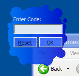

Simple Layered Window Sample (15K)
Simple Layered Window Sample (15K)
 7 Jan 2003
7 Jan 2003
First Posted
 Get an RGB Colour from an OLE_COLOR
Get an RGB Colour from an OLE_COLOR
 Creating Window Shapes from Bitmaps
Creating Window Shapes from Bitmaps

Window Shapes Using Layering
Create uniquely shaped and partially transparent windows on Windows 2000 and XP systems.
This article provides an alternative, higher-performance way of creating a custom-shaped Windows region from a bitmap for Windows 2000 and XP systems. Prior to Windows 2000, window shapes could only be customised using the SetWindowsRgn API. In Windows 2000 and above support the Layered Windows APIs, which allow for considerably greater flexibility in drawing transparent or alpha-blended window parts.
Layered Windows API
In Windows 95/98 and Windows NT 4.0 the only way for an application to create a window with a complex shape, such as a rounded balloon or a cool transparent digital clock, was to specify the shape by supplying the window region representing the shape via the SetWindowRgn API. Using this technique has a coupl of associated issues:
- If the regional window animates its shape frequently, or is dragged, Windows asks any windows beneath the regional window to repaint. That increases message traffic and also the calculations for invalid and visible regions are very expensive.
- The region API only addresses transparency and not translucency.
Layered Windows are the solution to these two issues. There are really two parts to this API: firstly, to allow windows to exhibit sprite-like behavior by masking and blending colours; and secondly the system's ability to use this technique on any window by redirecting the drawing into an off-screen buffer. The redirection behaviour provides a particularly simple way to use this API: you just need to add a few lines of code and suddenly the form can be transparent and/or translucent!
Using The API
Before using any of the Layered Windows APIs, first note that it only applies to top-level windows. So you can't apply these techniques to a control on a form, you can only apply them to a form as a whole. Once you've picked a form to apply the technique to, then need to apply the new WS_EX_LAYERED Extended Windows Style bit to the window before they take effect. To do this, use GetWindowsLong and SetWindowsLong:
Private Declare Function GetWindowLong Lib "USER32" Alias "GetWindowLongA" _
(ByVal hWnd As Long, ByVal nIndex As Long) As Long
Private Declare Function SetWindowLong Lib "USER32" Alias "SetWindowLongA" _
(ByVal hWnd As Long, ByVal nIndex As Long, _
ByVal dwNewLong As Long) As Long
Private Const GWL_STYLE = (-16)
Private Const GWL_EXSTYLE = (-20)
'Requires Windows 2000 or later:
Private Const WS_EX_LAYERED = &H80000
...
Private Sub SetLayered(ByVal hWnd As Long, ByVal bState As Boolean)
Dim lStyle As Long
lStyle = GetWindowLong(lhWnd, GWL_EXSTYLE)
If bState Then
lStyle = lStyle Or WS_EX_LAYERED
Else
lStyle = lStyle And Not WS_EX_LAYERED
End If
SetWindowLong lhWnd, GWL_EXSTYLE, lStyle
End Sub
Once this style bit is set then you can use the API. There are two ways of working with it: the easiest is the redirection method. To use this method, you use the SetLayeredWindowAttributes API. This allows you to set either or both:
- Which colour should be considered to be Transparent on your form.
- How Translucent the form should be.
The more complex technique is to use the UpdateLayeredWindow API to draw the contents of a particular DC into a Layered Window. This technique is more powerful since you can specify the alpha component of anything you display on screen, thus allowing you to create drop-shadows and the like. This is not covered in this article, I will cover this later in a future article.
Using SetLayeredWindowAttributes is very simple.
Private Declare Function SetLayeredWindowAttributes Lib "USER32" _
(ByVal hWnd As Long, ByVal crKey As Long, _
ByVal bAlpha As Byte, ByVal dwFlags As Long) As Long
Private Const LWA_COLORKEY = &H1
Private Const LWA_ALPHA = &H2
...
Private Function SetWindowEffects( _
ByVal lhWnd As Long, _
Optional ByVal transparentColor as Long = -1, _
Optional ByVal alpha As Byte = 255 _
)
Dim crKey As Long
Dim bAlpha As Byte
Dim lFlags As Long
If (transparentColor = -1) Then
transparentColor = 0
Else
crKey = transparentColor
lFlags = lFlags Or LWA_COLOR_KEY
End If
If (alpha < 255) Then
bAlpha = alpha
lFlags = lFlags Or LWA_ALPHA
End If
SetLayeredWindowAttributes lhWnd, _
transparentColor, bAlpha, lFlags
End Function
The transparentColor is just the value you get from VB's RGB function. You can use OleTranslateColor if you want to use a system colour as a Transparent colour; see the tip Get an RGB Colour from an OLE_COLOR for details.
That's basically it! The sample application simply uses a picture from a picture box with the Transparent region set to a bright pink shade (&H8000FF). To apply the region, the code just sets the WS_EX_LAYERED bit and then calls SetLayeredWindowAttributes with a colour key of &H8000FF. For amusement the alpha value is set to 220, so the form is slightly translucent, although in the real world you probably wouldn't want to use alpha unless you were fading something out that's been clicked or showing a drag image.